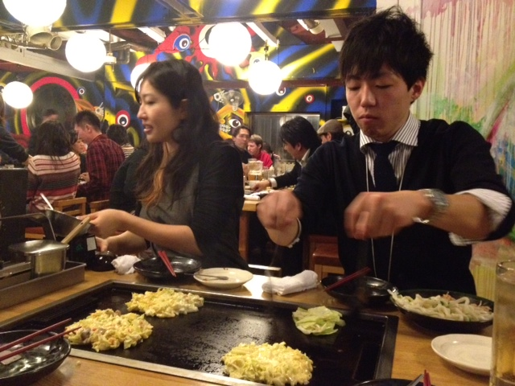

Okonomiyaki
Que es el Okonomiyaki?
Okonomiyaki es una necesidad real cuando se trata de qué comida japonesa probar,
ya que es deliciosa! Es pan frito y consiste en masa y repollo.
Se agregan diferentes ingredientes e ingredientes, desde carne en rebanadas y mariscos hasta
wasabi y
queso.
Esta variabilidad es lo que le dio su nombre Okonomi
, que significa a gusto de
uno
.
Informacion adicional
